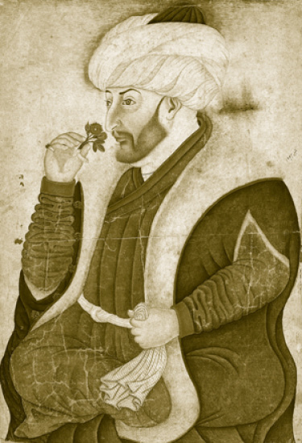
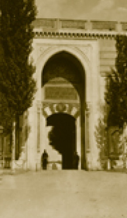

SARAYIN EV SAHİBİ OLARAK PADİŞAH
Osmanlı padişahı “Sultan” unvanıyla bilinir. Bu, Selçukîlerin Bağdat’ı fethinden ve hilâfetin Abbasioğullarında bırakılıp kendilerinin âdeta dünyevi bir imparator olmaları karşılığında kullandıkları bir terimdir. Osmanlı sultanı, tıpkı Rus çarı ve Alman-Avusturya kayseri gibi bu hususi unvanla anılır. “Sultan” dendiği zaman Türk imparatorluğunun başındaki insan anlaşılır. 19. yüzyılın ortasına kadar Türk sultanları, yani imparatorluğun başındaki hanedan burada kalmıştır. Osmanlı saltanatında unvanlar, silsile hâlinde babadan oğula geçer; yani padişah oğulları “şehzade”, kızları “sultan”dır. Buna “princesse imperiale” diyebiliriz.
Şehzadelerin çocukları yine şehzade, kızları yine sultandır. Fakat sultanların, prenseslerin çocukları hanedan üyesi sayılmazlar. Hanedanla akrabalığı olan kimselerdir; ama silsile itibariyle hanedandan düşerler. Osmanlı hanedan üyeleri ticaret yapamaz, başka meslekler icra edemez, sadece askerlik yapabilirler. Bu, monarşinin sonuna kadar böyle kalmıştır.
Başlangıçtaki ilk iki asırda Osmanlı şehzadeleri İstanbul’a yakın sancaklara vali olarak gönderilirler. Onlardan birisi padişah öldüğü an, devlet erkânı hangisinde ittifak etmiş ise taht için çağrılır. Bu sancak şehzadelerinden devlet merkezindeki vezirlerle en iyi ilişkileri olan, seferlerde yararlığı görülen, kendini ispat eden ve yönetimde göz dolduranları galiba merkezdeki devlet adamları, padişahın ölümünde hemen çağırmaktadırlar. Bazı hâlde arada çatışma da olmuştur. II. Bayezid ve Cem Sultan vakası gibi… Fakat genelde bu, tatlıya bağlanır. Hiç şüphesiz ki veraset sistemi iyi oturmadığı için III. Murad ve III. Mehmed dönemlerinde olduğu gibi şehzade katilleri görülmektedir, ama bu bir kural değildir ve Osmanlı tarihinin tamamına teşmil edilemez. Kardeş katli hâdisesi, Osmanlı tarihinin bir dönemini kapsar. I. Ahmed’den itibaren şehzadeler bu yüzden sancaklara gönderilmiyor ve sarayda büyüyorlar. 19. yüzyılda ancak toplumla temasa geçiyorlar. Ancak II. Meşrutiyet zamanında iyi okullarda - Galatasaray gibi - askerî okullarda ve hatta Berlin ve Viyana’da askerî mekteplerde subay olarak yetişenleri var ve hepsi iyi askerdirler.
Cihanı Titreten Padişahlar
Osmanlı padişahları mareşaldir. Hatta sancak şehzadeliklerinde bulunmayan ve sarayda çok küçük yaştan padişah olarak yetiştiği hâlde önemli bir mareşal olan Sultan IV. Murad’ı zikretmeliyiz. Yirmi sekiz yaşında vefat ettiği hâlde önemli fetihler yapmıştır. Aynı zamanda da sanatkâr bir kişiliği vardır. Sporcudur. Hekimbaşı Odası’nın alt tarafında bulunan mermer tahtının kitabesinde bu sporcu padişahın mahareti anlatılmaktadır.
Osmanlı padişahlarının ve şehzadelerinin her birinin bir görevi vardır, bir zanaatı vardır. Sultan Süleyman kuyumcudur, III. Ahmed çok önemli bir hattattır. Sarayımızın pek çok köşesini onun hat levhaları süslemektedir. II. Abdülhamid önemli bir marangozdur. Şehzadeler içinde müzisyenler vardır. III. Selim önemli bir müzisyendir. Bu sanatlara dikkat ederler, hatta saltanat kaldırıldıktan sonra bile dışarıda bu öğrendikleri zanaatlarla yaşayıp geçinenler vardır.
Padişahların bazıları isyanla tahttan indirilmiştir. Fakat hiçbir zaman Osmanlı hanedanının hâkimiyeti değişmemiştir. Osmanlı sultanına tâbi, mümtaz, özerk hükümdarlar vardır. Macaristan, Erdel; bugünkü Romanya’yı oluşturan Eflak ve Boğdan; Kırım Hanlığı gibi yerlerdir bunlar. Buraları yerli hanedanlar yönetir ama Osmanlı tahtına bağlıdırlar. Belirli vergileri verirler. Asker yardımı yaparlar. Dış politikada Osmanlı devletinin Bâbıâli’nin yolunu takip etmek durumundadırlar. Osmanlı padişahlarının, bütün İslâm hükümdarları gibi hâkim biri olarak “halife” unvanı vardır. Bu hep vardı, fakat Yavuz Sultan Selim Mısır’ı, Hicaz’ı aldıktan sonra bunun üzerinde çok durulmuştur. Esas olan Hicaz topraklarının yönetiminde Hadim-ül Haremeyn (yani Custodia) olmaktır. Bu unvan ve bu sıfata Osmanlı hükümeti son derece dikkat etmiş ve I. Cihan Harbi’nin sonuna kadar bütün dünya Müslümanlarının hac farizasını yerine getirmesi çok önemli bulunmuştur. Şam Beylerbeyliği’nin yani burayı yöneten valinin unvanı Emir-ül Hac’dır. Büyük hâdiseler, kırgınlıklar, katliam, kavgalar olmadan hac görevini Osmanlı saltanatı son güne kadar gayet iyi idare etmiştir.
Hilafet unvanı 1922’de Büyük Millet Meclisi kararıyla hanedanın veliahdı olan Abdülmecid Efendi’ye bırakılmış, 1924’te de kaldırılmıştır.
Osmanlı Sarayı’nda en önemli görev Divan-ı Hümâyûn toplantılarından sonra Arz Odası’nda padişahla başvezir ve vezirler arasındaki mütalaa ve karar süreciydi. Sarayı yöneten amirler ise denebilir ki Hasodabaşı, Silahdar ağa, Darü’s saade ağası, Bâbü’s saade ağası gibi memurlardı. Saraydaki bütün sanatçıların başı -ki bunların sayısı birkaç bini bulmaktadır- hazinedar ağadır. Yine bu sarayın dışında devşirmelerin yetiştirilmesi ile ilgili olarak Enderun’u yöneten kişi de Hasodabaşı’dır.

Topkapı Sarayı’nın ilk banisi Fatih Sultan Mehmed Han
Osmanlı saltanatı 19. yüzyılda bugünkü Dolmabahçe ve Yıldız Sarayları’nda devam eder. En son hükümdar da mütareke sırasında Dolmabahçe’den tekrar Yıldız’a dönmüştür. Ondan sonra bu altı asırlık sülale bitmiştir. 1924 Mart’ında bütün Osmanlı hanedan üyeleri Türkiye topraklarını terk ettiler ve 1952’de kadın üyelere af çıktı, 1974’te de bütün erkek üyelere bir af çıkartıldı.
Hiç şüphesiz ki; cihan tarihini etkileyen şahsiyetler Osmanlı padişahları içinde bilhassa Fatih Sultan Mehmed Han ve Kanuni Sultan Süleyman Han’dır. Bunlardan biri “Fatih” unvanını taşır, öbürüne de biz “Kanuni” kanun yapan deriz ama bütün Avrupalılar “Muhteşem” unvanını verirler ki gerçekten muhteşemdir. Aşağı yukarı ta Osman Gazi’den beri dokuz tane büyük mareşal çıkmıştır bu hanedanın içinden ama dünya tarihi en çok bu ikisini tanır ve ikisi üzerinde durur. Üstlerine yazılan kitap ve araştırmalar henüz bitmemiştir.
Osmanlı padişahları tahttan indirilirler ve Harem’de “şimşirlik” denilen bir bölümde ölene kadar barınırlardı. 19. yüzyılda Sultan V. Murad tahttan indirilmiş ve Çırağan’da ölümüne kadar kalmıştır. Sultan II. Abdülhamid de önce Selanik’e sürgün edilmiş, Balkan Savaşı’ndan sonra Beylerbeyi Sarayı’na nakledilmiştir. Sultan Abdülaziz’in ise intihar ettiği söylenir. Ancak katledildiği anlaşılmıştır. Sultan II. Osman maalesef bir yeniçeri isyanıyla tahttan indirildikten sonra feci şekilde katledilmiştir. Bu olay hanedan üyelerinin zihninde çok derin yaralar açmıştır. Sultan İbrahim tahttan indirilmiş ve katledilmiştir. Sultan IV. Mehmed ve Sultan II. Mustafa tahttan indirilmiştir. Bundan sonra tahttan indirme hâdisesi Sultan III. Selim için geçerlidir. Şimşirlikte hapsedilmişti. Kendisini kurtarmak için gelen Alemdar Mustafa Paşa saraya girince mevcut padişah, -yeğeni IV. Mustafa- Sultan III. Selim’i katlettirdi ardından ona da aynı siyaset tatbik edildi. Hâl edilen diğerleri muhafaza altında tutulmuşlardır. Bundan da anlaşıldığına göre Topkapı Sarayı padişahların ikametgâhları olmasına rağmen maalesef bazı acı hâdiselere de sahne olmuştur.
Tevazu
Osmanlı İmparatorluğu’nun sarayları ve şaşaası üzerine çok söz söylenir. Geçmişi karalamak isteyenlerin saray müsrifliği ve harem masallarını dillendirmeleri abartılmış yaklaşımlardır. Okul kitaplarında “Maliyenin iflası ve saraylar” gibi anlatımlar ne kadar geçerlidir. Yurttaşlarımız, son on yılda Avrupa’nın ve Rusya’nın başkentlerini gezmeye başladıktan ve buradaki saray ve kasırları gördükten sonra mukayeseyi daha iyi yapmaktadır; 19. yüzyılın Osmanlı devlet tüketimi diğer büyük devletlerle mukayese edilemeyecek ölçüde mütevazıdır. Topkapı Sarayı, Fransızların, Rusların devasa saraylarına nazaran çok çok küçük kalır. Ancak sarayımız hoş bahçeleri, enfes mimarisi ve etkileyici konumu ile güzeldir ve sarayımızda kimilerinin sandığı gibi abartılı lüks bir hayat ve israf söz konusu değildir.
Osmanlı cemiyetinde ne vezirlerin ne de diğer yöneticilerin hususî konakları pek parlaktır. Hatta Müslüman olsun Hıristiyan olsun, ruhanî reisler için de aynı durum söz konusudur. Hiçbir zaman Rum ve Ermeni patriklerinin Vatikan’daki papa gibi muhteşem yazlık veya kışlık saraylarının bulunması mümkün değildir. Vezirlerin aynı şekilde zengin bir konağa, saraya sahip olmadığı görülür. Hatta padişah için de bu böyledir.
Bütün asırları, bütün mekânları büyüleyen Süleymaniye gibi bir eseri yaptıran Kanunî Sultan Süleyman, Topkapı Sarayı’ndan çıkmayı düşünmemiştir. Yani ünlü Mimar Sinan’a büyük, süslü bir saray yaptırmak söz konusu olmamıştır.
O koca imparatorluğun müreffeh başvezirleri Damat Rüstem Paşa ve onun haleflerinden uzun süre vezir-i âzamlık yapan Damat (veya Şehit) Sokullu Mehmed Paşa veya onun haleflerinden Damat Siyavuş Paşa’nın da ünlü bir sarayı veya konağı yoktur. Zaten olamaz; çünkü damatlar âdet üzere padişahın kızı veya kız kardeşinin, eşlerinin, sultanların sarayına, konağına yerleşirlerdi. Ne var ki; onlardan da pek bir kalıntı yoktur. Ünlü Esma Sultan’ın Boğaz’daki sarayının sadece ismi kalmıştır.
Başkentteki, bilhassa 19. yüzyıldaki sefaret sarayları âdeta bizim ve devleti yönetenlerin mütevazı konaklarıyla alay eder konumdadır: Tepebaşı’ndaki ünlü Britanya sefareti, Fransa Sarayı dediğimiz Fransa Büyükelçiliği... 16. yüzyıldan beri yerinde bulunan ünlü Venedik Sarayı, yani Venedik elçiliğinin bulunduğu yer ki sonradan Avusturya-Macaristan Büyükelçiliği oldu ve İtalya ile münasebetimizin henüz kurulduğu zamanlarda İtalya’nın büyük bir devlet olarak 20. yüzyıl başında yaptırdığı fakat kullanmadığı Maçka’daki ünlü İtalyan Büyükelçilik binası yani Maçka Kız Sanat Okulu... Bu binalara baktığımız zaman, bunlarla boy ölçüşecek ne bir vezir konağımız ne bir sadrazam ikametgâhımız vardır. Müthiş bir tevazu göze çarpmaktadır. Bu tevazuun bir ahlakî anlayış yanı olduğu gibi malî imkânsızlığı da tartışılabilir.

Bâb-ı Hümâyûn ve nöbet tutan askerler. (Yaklaşık 1895) Günümüzde kapının üst tarafında korkuluk bulunmamaktadır.